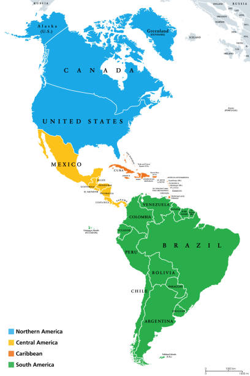
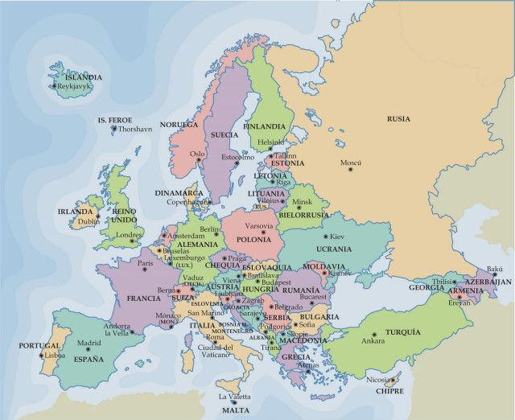
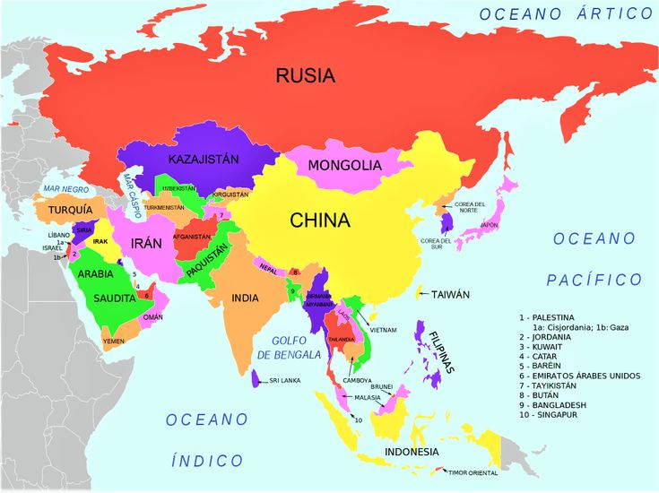
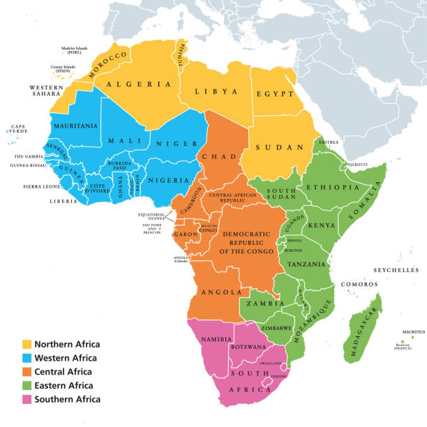
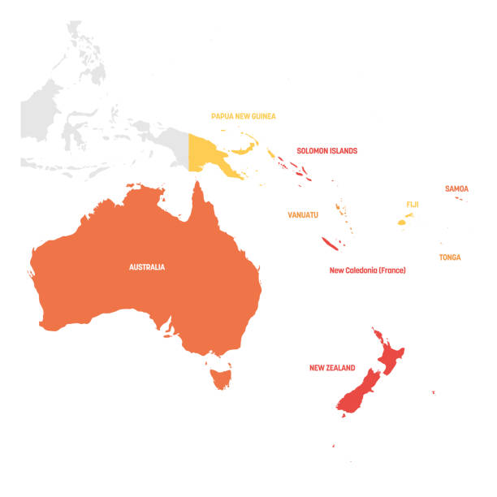
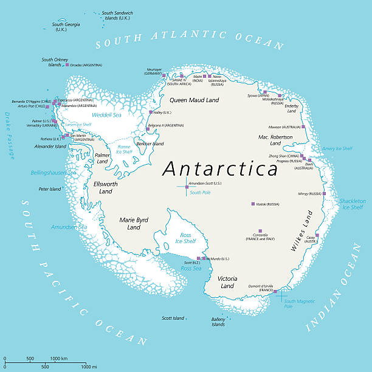

Continentes
continentes
america
europa
asia
africa
oceania
antartida
canada
balice
nicaragua
venezuela
chile
bulgaria
dinamarca
noruega
ucrania
irlanda
filipinas
armenia
birmania
malasia
vietnam
ghana
angola
zimbabue
uganda
keina
figi
nauru
tonga
nueva zelanda
palaos
la antartida argentina(argentina)
la dendencia rosas(nueva zelanda
adelie land(francia)
territorio antartico australiano(austrañlia)
islandia pedro/o tierra de la reina maud(noruega)
antartida chilena(chile)
maryebyrd(sin pertenencia)





